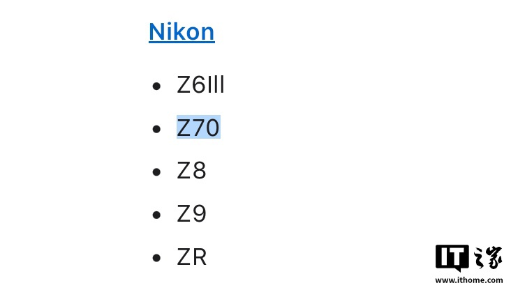
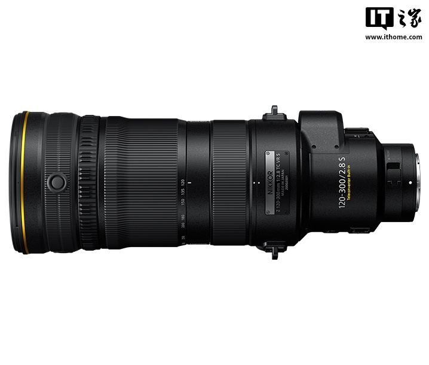
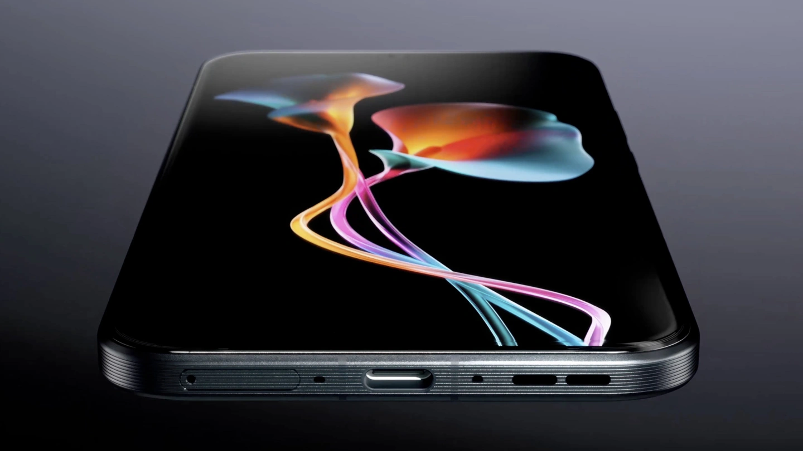
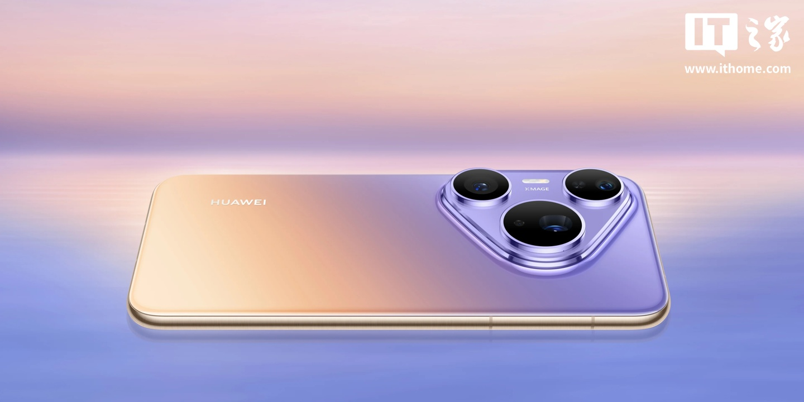
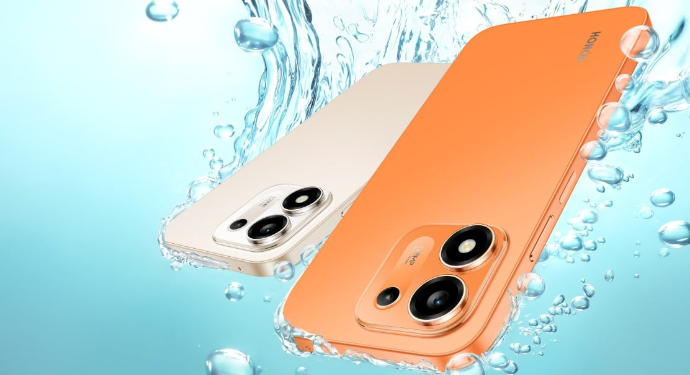
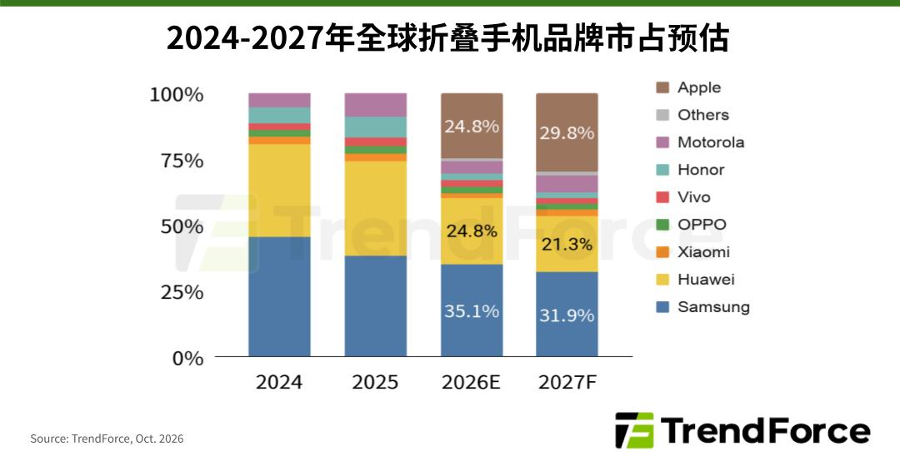

THE TECH EDIT
기술의 변화, 매일 한눈에.
카메라 · 스마트폰 · AI, 해외 테크 소식을 모아 전합니다.
최근 발행2026-10-30
새로 들어온 소식
LATEST STORIES

최신 뉴스
전체 4,017개 기사칩 수요 회복으로 ST마이크로일렉트로닉스 4분기 매출 증가 예상

SmartSense, Lofic HDR 4.0 및 2배 초점 거리 지원 5천만 화소 1/1.28인치 CMOS SC5D8XS 출시

Samsung W27, 18,999위안부터 시작하는 폴더블 디스플레이 스마트폰 출시

RedMagic 12 Pro+ vs iPhone 18 Pro Max: Apple의 프리미엄은 그만한 가치가 있을까?

OnePlus 16 vs Vivo X500 Pro: 9000mAh 배터리 vs Zeiss 카메라

Nubia 성운 AIOS 3.0 버전 업그레이드 계획 발표, 12월 Z80 Ultra 스마트폰에 푸시 예정

Nikon Z70 카메라 신제품 외관 공개, 플래그십 APS-C

99,999위안: Nikon, Z 120-300mm f/2.8 TC VR S 풀프레임 렌즈 출시, 1.4배 텔레컨버터 내장

모토로라 Signature 27 스마트폰 11월 출시, 스냅드래곤 8EE6 칩 탑재

Samsung Galaxy S26 Ultra보다 비싸다? Motorola Signature 27 스마트폰, 전자상거래 플랫폼에 출시

iPhone Air 2, 더 커진 배터리와 듀얼 후면 카메라 탑재 확인

Huawei의 서브 브랜드 첫 스마트폰은 6.39인치, 9 시리즈 칩셋을 탑재한 바 타입 스마트폰인 Huawei 싱망(星芒)으로 예상된다

Huawei 바 타입 스마트폰 Pura X View, 출시 50일 만에 출하량 100만 대 돌파

시리즈 유일: Huawei Pura 90 Plus 스마트폰, USB 3.1 Gen 1 기능 지원 확인

NearLink E2.0: Huawei Pura 90 Plus 스마트폰, 출시와 동시에 NearLink 오디오 기능 지원

Honor X8e 4G, 120Hz 화면, 108MP 카메라, 7,700mAh 배터리 탑재하여 출시

구글, 안드로이드 폴더블 디스플레이 앱 적용 적극 추진, Google Play 스토어 내년 평가 시스템 도입 예정

고독스, iM10 미니 플래시 출시: 단일 접점 범용 핫슈로 모든 브랜드 카메라에 호환

Apple iPhone Duo 폴더블 디스플레이 스마트폰, 중국 첫 판매 기간 동안 약 20만 대 판매

Apple, 일부 iPhone Duo의 내부 디스플레이 문제 인정... 원인 및 영향받은 기기 수는 미공개

트렌드포스, Apple 폴더블 아이폰 첫해 출하량 500만 대, 전 세계 폴더블 스마트폰 출하량의 약 25% 차지할 것으로 예상
검색 결과가 없습니다
다른 검색어를 입력하거나 필터를 초기화해 보세요.